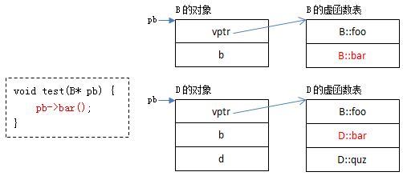

<!DOCTYPE HTML>
<html lang="zh-CN">
<head><meta name="generator" content="Hexo 3.8.0">
    <!--Setting-->
    <meta charset="UTF-8">
    <meta name="viewport" content="width=device-width, user-scalable=no, initial-scale=1.0, maximum-scale=1.0, minimum-scale=1.0">
    <meta http-equiv="X-UA-Compatible" content="IE=Edge,chrome=1">
    <meta http-equiv="Cache-Control" content="no-siteapp">
    <meta http-equiv="Cache-Control" content="no-transform">
    <meta name="renderer" content="webkit|ie-comp|ie-stand">
    <meta name="apple-mobile-web-app-capable" content="我的博客 - blog">
    <meta name="apple-mobile-web-app-status-bar-style" content="black">
    <meta name="format-detection" content="telephone=no,email=no,adress=no">
    <meta name="browsermode" content="application">
    <meta name="screen-orientation" content="portrait">
    <link rel="dns-prefetch" href="https://lives.xtcgch.ink">
    <!--SEO-->

<meta name="description" content="脑容量不够，笔记来凑">


<meta name="robots" content="all">
<meta name="google" content="all">
<meta name="googlebot" content="all">
<meta name="verify" content="all">
    <!--Title-->


<title>面试之综合篇 | 我的博客 - blog</title>


    <link rel="alternate" href="/atom.xml" title="我的博客 - blog" type="application/atom+xml">


    <link rel="icon" href="https://blog.xtcgch.ink/img/background/海绵宝宝.ico">

    


<link rel="stylesheet" href="/css/bootstrap.min.css?rev=3.3.7">
<link rel="stylesheet" href="/css/font-awesome.min.css?rev=4.5.0">
<link rel="stylesheet" href="/css/style.css?rev=@@hash">


    


    

</head>

</html>
<!--[if lte IE 8]>
<style>
    html{ font-size: 1em }
</style>
<![endif]-->
<!--[if lte IE 9]>
<div style="ie">你使用的浏览器版本过低，为了你更好的阅读体验，请更新浏览器的版本或者使用其他现代浏览器，比如Chrome、Firefox、Safari等。</div>
<![endif]-->

<body>
    <header class="main-header" style="background-image:url(https://blog.xtcgch.ink/img/head-bg.jpg)">
    <div class="main-header-box">
        <a class="header-avatar" href="/" title="unistd68">
            
        </a>
        <div class="branding">
        	<!--<h2 class="text-hide">Snippet主题,从未如此简单有趣</h2>-->
            
                <h2> 脑容量不够，笔记来凑 </h2>
            
    	</div>
    </div>
</header>
    <nav class="main-navigation">
    <div class="container">
        <div class="row">
            <div class="col-sm-12">
                <div class="navbar-header"><span class="nav-toggle-button collapsed pull-right" data-toggle="collapse" data-target="#main-menu" id="mnav">
                    <span class="sr-only"></span>
                        <i class="fa fa-bars"></i>
                    </span>
                    <a class="navbar-brand" href="https://lives.xtcgch.ink">我的博客 - blog</a>
                </div>
                <div class="collapse navbar-collapse" id="main-menu">
                    <ul class="menu">
                        
                            <li role="presentation" class="text-center">
                                <a href="https://blog.xtcgch.ink/"><i class="fa "></i>主页</a>
                            </li>
                        
                            <li role="presentation" class="text-center">
                                <a href="https://blog.xtcgch.ink/categories/原理/"><i class="fa "></i>原理</a>
                            </li>
                        
                            <li role="presentation" class="text-center">
                                <a href="https://blog.xtcgch.ink/categories/代码/"><i class="fa "></i>代码</a>
                            </li>
                        
                            <li role="presentation" class="text-center">
                                <a href="https://blog.xtcgch.ink/categories/开源/"><i class="fa "></i>开源</a>
                            </li>
                        
                            <li role="presentation" class="text-center">
                                <a href="https://blog.xtcgch.ink/categories/面试/"><i class="fa "></i>面试</a>
                            </li>
                        
                            <li role="presentation" class="text-center">
                                <a href="https://blog.xtcgch.ink/categories/其他/"><i class="fa "></i>其他</a>
                            </li>
                        
                            <li role="presentation" class="text-center">
                                <a href="https://blog.xtcgch.ink/archives/"><i class="fa "></i>时间轴</a>
                            </li>
                        
                    </ul>
                </div>
            </div>
        </div>
    </div>
</nav>
    <section class="content-wrap">
        <div class="container">
            <div class="row">
                <main class="col-md-8 main-content m-post">
                    <p id="process"></p>
<article class="post">
    <div class="post-head">
        <h1 id="面试之综合篇">
            
	            面试之综合篇
            
        </h1>
        <div class="post-meta">
    
    
    <span class="categories-meta fa-wrap">
        <i class="fa fa-folder-open-o"></i>
        <a href="https://blog.xtcgch.ink/categories/面试">
            面试
        </a>
    </span>
    

    
    <span class="fa-wrap">
        <i class="fa fa-tags"></i>
        <span class="tags-meta">
            
                
                    <a href="https://blog.xtcgch.ink/tags/面试" title="面试">
                        面试
                    </a>
                
            
        </span>
    </span>
    

    
        
        <span class="fa-wrap">
            <i class="fa fa-clock-o"></i>
            <span class="date-meta">2020/09/02</span>
        </span>
        
    
</div>

            
            
            <p class="fa fa-exclamation-triangle warning">
                本文于<strong>425</strong>天之前发表，文中内容可能已经过时。
            </p>
        
    </div>
    
    <div class="post-body post-content">
        <p><strong>摘要：</strong>记录一下面试要点。</p>
<a id="more"></a>
<hr>
<h2 id="脑图"><a href="#脑图" class="headerlink" title="脑图"></a>脑图</h2><!--

-->
<hr>
<h2 id="目录"><a href="#目录" class="headerlink" title="目录"></a><table><tr><td bgcolor="#C7C7C7">目录</td></tr></table></h2><p><a href="#基础篇">★★★ 一、基础篇 ★★★</a></p>
<ul>
<li><a href="#1">1.基础原理类</a><ul>
<li><a href="#1.1">1.1 map和set有什么区别，分别又是怎么实现的</a></li>
<li><a href="#1.2">1.2 STL中MAP数据存放形式</a></li>
<li><a href="#1.3">1.3 epoll原理</a></li>
<li><a href="#1.4">1.4 malloc的原理，另外brk系统调用和mmap系统调用的作用分别是什么</a></li>
<li><a href="#1.5">1.5 C++的内存管理</a></li>
<li><a href="#1.6">1.6 C++的内存泄漏</a></li>
<li><a href="#1.7">1.7 什么时候会发生段错误</a></li>
<li><a href="#1.8">1.8 什么是memory leak，也就是内存泄漏</a></li>
<li><a href="#1.9">1.9 C++11有哪些新特性</a></li>
<li><a href="#1.10">1.10 并发(concurrency)和并行(parallelism)</a></li>
<li><a href="#1.11">1.11 单核机器上写多线程程序，是否需要考虑加锁</a></li>
<li><a href="#1.12">1.12 死锁发生的条件以及如何解决死锁</a></li>
<li><a href="#1.13">1.13 操作系统中的结构体对齐，字节对齐</a></li>
<li><a href="#1.14">1.14 虚函数的实现的基本原理</a></li>
<li>[static关键字的作用]</li>
<li>[软硬链接]</li>
<li>[函数指针]</li>
<li>[设计模式]</li>
<li>[数据结构]</li>
<li>[各种排序算法]</li>
<li>[二叉树定理]</li>
<li>[互斥锁]</li>
<li>[STL]</li>
<li>[为什么析构函数要是虚函数]</li>
<li>[构造函数可以是虚函数吗]</li>
<li>[new和malloc的原理和区别]</li>
<li>[手动实现strcpy]</li>
<li>[C++对象内存布局]</li>
<li>[虚函数多态机制]</li>
<li>[线程和进程的区别]</li>
<li>[僵尸进程]</li>
<li>[重载与多态的区别]</li>
<li>[内存管理]</li>
<li>[RAII 机制]</li>
<li>[Sizeof 考察]</li>
<li>[union的内存分配]</li>
<li>[进程之间调度]</li>
<li>[进程间通信]</li>
<li>[线程间通信]</li>
</ul>
</li>
<li><a href="#2">2.计算机网络类</a><ul>
<li><a href="#2.1">2.1 TCP怎么保证可靠性，并且简述一下TCP建立连接和断开连接的过程</a></li>
<li><a href="#2.2">2.2 TCP的模型，状态转移</a></li>
<li><a href="#2.3">2.3 操作系统中的中断</a></li>
<li><a href="#2.4">2.4 TCP拥塞控制</a></li>
<li><a href="#2.5">2.5 阻塞，非阻塞，同步，异步</a></li>
<li><a href="#2.6">2.6 ET和LT的区别</a></li>
<li>[io多路复用]</li>
<li>[大小端转换]</li>
<li>[IP分片与重组]</li>
<li>[网络粘包]</li>
</ul>
</li>
<li><a href="#3">3.数据库类</a><ul>
<li><a href="#3.1">3.1 数据库事物的一致性</a></li>
<li><a href="#3.2">3.2 redis和memcache</a></li>
<li>[数据库索引]</li>
<li>[事务]</li>
<li>[MySQL两种引擎的区别]</li>
<li>[隔离的级别]</li>
<li>[回表]</li>
<li>[log分类]</li>
<li>[覆盖索引]</li>
<li>[为什么说B+树比B树更适合数据库索引]</li>
</ul>
</li>
<li><a href="#4">4.linux强相关类</a><ul>
<li><a href="#4.1">4.1 select，epoll的区别</a></li>
<li><a href="#4.2">4.2 Linux虚拟地址空间</a></li>
<li><a href="#4.3">4.3 fork和vfork的区别</a></li>
<li><a href="#4.3">4.3 虚函数的实现的基本原理</a></li>
<li><a href="#4.4">4.4 如何判断一个程序是死锁还是死循环</a></li>
<li>[gdb调试命令]</li>
<li>[gdb step和next的区别]</li>
<li>[gdb查看内存]</li>
<li>[gdb多线程调试]</li>
<li>[gdb查看调用堆栈]</li>
<li>[gdb 带参数调试]</li>
<li>[gdb list命令]</li>
<li>[用户态到内核态的转化原理]</li>
<li>[系统调用]</li>
<li>[6种微服务RPC框架]<br><a href="#进阶篇">★★★ 二、进阶篇 ★★★</a></li>
</ul>
</li>
</ul>
<ul>
<li>[git你使用的是哪种工作流？git有哪些协作流了解过吗？]</li>
<li>[大数据处理了解过吗？一致性哈希解决什么问题的？]</li>
<li>[存储引擎了解过吗？不是MySQL，大数据这块的存储引擎？]</li>
<li>[说说对zookeeper的了解]</li>
<li>[Zookeeper的选主机制]</li>
<li>[优雅关闭服务和进程]</li>
</ul>
<hr>
<h1 id="★★★-一、基础篇-★★★"><a href="#★★★-一、基础篇-★★★" class="headerlink" title="★★★ 一、基础篇 ★★★"></a><div align="center" id="基础篇"><font size="70">★★★ 一、基础篇 ★★★</font></div></h1><h2 id="1-基础原理类"><a href="#1-基础原理类" class="headerlink" title="1.基础原理类"></a><table><tr><td bgcolor="#C7C7C7" id="1">1.基础原理类</td></tr></table></h2><h3 id="1-1-map和set有什么区别，分别又是怎么实现的"><a href="#1-1-map和set有什么区别，分别又是怎么实现的" class="headerlink" title="1.1 map和set有什么区别，分别又是怎么实现的"></a><font color="#0000FF" id="1.1">1.1 map和set有什么区别，分别又是怎么实现的</font></h3><ol>
<li><p>共同点<br>map和set都是C++的关联容器，其底层实现都是红黑树（RB-Tree）。由于 map 和set所开放的各种操作接口，RB-tree 也都提供了，所以几乎所有的 map 和set的操作行为，都只是转调 RB-tree 的操作行为。</p>
</li>
<li><p>区别</p>
</li>
</ol>
<ul>
<li><p>map中的元素是key-value（关键字—值）对：关键字起到索引的作用，值则表示与索引相关联的数据；Set与之相对就是关键字的简单集合，set中每个元素只包含一个关键字。</p>
</li>
<li><p>set的迭代器是const的，不允许修改元素的值；map允许修改value，但不允许修改key。其原因是因为map和set是根据关键字排序来保证其有序性的，如果允许修改key的话，那么首先需要删除该键，然后调节平衡，再插入修改后的键值，调节平衡，如此一来，严重破坏了map和set的结构，导致iterator失效，不知道应该指向改变前的位置，还是指向改变后的位置。所以STL中将set的迭代器设置成const，不允许修改迭代器的值；而map的迭代器则不允许修改key值，允许修改value值。</p>
</li>
<li><p>map支持下标操作，set不支持下标操作。map可以用key做下标，map的下标运算符[ ]将关键码作为下标去执行查找，如果关键码不存在，则插入一个具有该关键码和mapped_type类型默认值的元素至map中，因此下标运算符[ ]在map应用中需要慎用，const_map不能用，只希望确定某一个关键值是否存在而不希望插入元素时也不应该使用，mapped_type类型没有默认值也不应该使用。如果find能解决需要，尽可能用find。</p>
</li>
</ul>
<h3 id="1-2-STL中MAP数据存放形式"><a href="#1-2-STL中MAP数据存放形式" class="headerlink" title="1.2 STL中MAP数据存放形式"></a><font color="#0000FF" id="1.2">1.2 STL中MAP数据存放形式</font></h3><ol>
<li>有序的MAP是红黑树，unordered map底层结构是哈希表</li>
</ol>
<ul>
<li>Map映射，map 的所有元素都是 pair，同时拥有实值（value）和键值（key）。pair 的第一元素被视为键值，第二元素被视为实值。所有元素都会根据元素的键值自动被排序。不允许键值重复。</li>
</ul>
<p>底层实现：红黑树</p>
<p>适用场景：有序键值对不重复映射</p>
<ul>
<li>Multimap多重映射。multimap 的所有元素都是 pair，同时拥有实值（value）和键值（key）。pair 的第一元素被视为键值，第二元素被视为实值。所有元素都会根据元素的键值自动被排序。允许键值重复。</li>
</ul>
<p>底层实现：红黑树</p>
<p>适用场景：有序键值对可重复映射</p>
<h3 id="1-3-epoll原理"><a href="#1-3-epoll原理" class="headerlink" title="1.3 epoll原理"></a><font color="#0000FF" id="1.3">1.3 epoll原理</font></h3><p>调用顺序：<br><figure class="highlight plain"><table><tr><td class="gutter"><pre><span class="line">1</span><br><span class="line">2</span><br><span class="line">3</span><br></pre></td><td class="code"><pre><span class="line">int epoll_create(int size);</span><br><span class="line">int epoll_ctl(int epfd, int op, int fd, struct epoll_event *event);</span><br><span class="line">int epoll_wait(int epfd, struct epoll_event *events,int maxevents, int timeout);</span><br></pre></td></tr></table></figure></p>
<ol>
<li>首先创建一个epoll对象</li>
<li>使用epoll_ctl对这个对象进行操作，把需要监控的描述添加进去，这些描述如将会以epoll_event结构体的形式组成一颗红黑树</li>
<li>阻塞在epoll_wait，进入大循环，当某个fd上有事件发生时，内核将会把其对应的结构体放入到一个链表中，返回有事件发生的链表</li>
</ol>
<h3 id="1-4-malloc的原理，另外brk系统调用和mmap系统调用的作用分别是什么"><a href="#1-4-malloc的原理，另外brk系统调用和mmap系统调用的作用分别是什么" class="headerlink" title="1.4 malloc的原理，另外brk系统调用和mmap系统调用的作用分别是什么"></a><font color="#0000FF" id="1.4">1.4 malloc的原理，另外brk系统调用和mmap系统调用的作用分别是什么</font></h3><p>Malloc函数用于动态分配内存。为了减少内存碎片和系统调用的开销，malloc其采用内存池的方式，先申请大块内存作为堆区，然后将堆区分为多个内存块，以块作为内存管理的基本单位。当用户申请内存时，直接从堆区分配一块合适的空闲块。Malloc采用隐式链表结构将堆区分成连续的、大小不一的块，包含已分配块和未分配块；同时malloc采用显示链表结构来管理所有的空闲块，即使用一个双向链表将空闲块连接起来，每一个空闲块记录了一个连续的、未分配的地址。<br>当进行内存分配时，Malloc会通过隐式链表遍历所有的空闲块，选择满足要求的块进行分配；当进行内存合并时，malloc采用边界标记法，根据每个块的前后块是否已经分配来决定是否进行块合并。</p>
<p>Malloc在申请内存时，一般会通过brk或者mmap系统调用进行申请。其中当申请内存小于128K时，会使用系统函数brk在堆区中分配；而当申请内存大于128K时，会使用系统函数mmap在映射区分配。</p>
<h3 id="1-5-C-的内存管理"><a href="#1-5-C-的内存管理" class="headerlink" title="1.5 C++的内存管理"></a><font color="#0000FF" id="1.5">1.5 C++的内存管理</font></h3><p>在C++中，虚拟内存分为代码段、数据段、BSS段、堆区、文件映射区以及栈区六部分。<br>代码段:包括只读存储区和文本区，其中只读存储区存储字符串常量，文本区存储程序的机器代码。</p>
<p>数据段：存储程序中已初始化的全局变量和静态变量</p>
<p>bss 段：存储未初始化的全局变量和静态变量（局部+全局），以及所有被初始化为0的全局变量和静态变量。</p>
<p>堆区：调用new/malloc函数时在堆区动态分配内存，同时需要调用delete/free来手动释放申请的内存。</p>
<p>映射区:存储动态链接库以及调用mmap函数进行的文件映射</p>
<p>栈：使用栈空间存储函数的返回地址、参数、局部变量、返回值</p>
<h3 id="1-6-C-的内存泄漏-font-gt"><a href="#1-6-C-的内存泄漏-font-gt" class="headerlink" title="1.6 C++的内存泄漏/font&gt;"></a><font color="#0000FF" id="1.6">1.6 C++的内存泄漏/font&gt;</font></h3><p>内存泄漏通常是由于调用了malloc/new等内存申请的操作，但是缺少了对应的free/delete。</p>
<ol>
<li>linux环境下的内存泄漏检查工具Valgrind</li>
<li>在写代码时可以添加内存申请和释放的统计功能，统计当前申请和释放的内存是否一致</li>
</ol>
<h3 id="1-7-什么时候会发生段错误"><a href="#1-7-什么时候会发生段错误" class="headerlink" title="1.7 什么时候会发生段错误"></a><font color="#0000FF" id="1.7">1.7 什么时候会发生段错误</font></h3><ol>
<li>使用野指针</li>
<li>试图修改字符串常量的内</li>
</ol>
<h3 id="1-8-什么是memory-leak，也就是内存泄漏"><a href="#1-8-什么是memory-leak，也就是内存泄漏" class="headerlink" title="1.8 什么是memory leak，也就是内存泄漏"></a><font color="#0000FF" id="1.8">1.8 什么是memory leak，也就是内存泄漏</font></h3><p>内存泄漏(memory leak)是指由于疏忽或错误造成了程序未能释放掉不再使用的内存的情况。内存泄漏并非指内存在物理上的消失，而是应用程序分配某段内存后，由于设计错误，失去了对该段内存的控制，因而造成了内存的浪费。<br>内存泄漏的分类：</p>
<ol>
<li><p>堆内存泄漏 （Heap leak）。对内存指的是程序运行中根据需要分配通过malloc,realloc new等从堆中分配的一块内存，再是完成后必须通过调用对应的 free或者delete 删掉。如果程序的设计的错误导致这部分内存没有被释放，那么此后这块内存将不会被使用，就会产生Heap Leak.</p>
</li>
<li><p>系统资源泄露（Resource Leak）。主要指程序使用系统分配的资源比如 Bitmap,handle ,SOCKET等没有使用相应的函数释放掉，导致系统资源的浪费，严重可导致系统效能降低，系统运行不稳定。</p>
</li>
<li><p>没有将基类的析构函数定义为虚函数。当基类指针指向子类对象时，如果基类的析构函数不是virtual，那么子类的析构函数将不会被调用，子类的资源没有正确是释放，因此造成内存泄露。</p>
</li>
</ol>
<h3 id="1-9-C-11有哪些新特性"><a href="#1-9-C-11有哪些新特性" class="headerlink" title="1.9 C++11有哪些新特性"></a><font color="#0000FF" id="1.9">1.9 C++11有哪些新特性</font></h3><h3 id="1-10-并发-concurrency-和并行-parallelism"><a href="#1-10-并发-concurrency-和并行-parallelism" class="headerlink" title="1.10 并发(concurrency)和并行(parallelism)"></a><font color="#0000FF" id="1.10">1.10 并发(concurrency)和并行(parallelism)</font></h3><p>并发（concurrency）：指宏观上看起来两个程序在同时运行，比如说在单核cpu上的多任务。但是从微观上看两个程序的指令是交织着运行的，你的指令之间穿插着我的指令，我的指令之间穿插着你的，在单个周期内只运行了一个指令。这种并发并不能提高计算机的性能，只能提高效率。</p>
<p>并行（parallelism）：指严格物理意义上的同时运行，比如多核cpu，两个程序分别运行在两个核上，两者之间互不影响，单个周期内每个程序都运行了自己的指令，也就是运行了两条指令。这样说来并行的确提高了计算机的效率。所以现在的cpu都是往多核方面发展。</p>
<h3 id="1-11-单核机器上写多线程程序，是否需要考虑加锁"><a href="#1-11-单核机器上写多线程程序，是否需要考虑加锁" class="headerlink" title="1.11 单核机器上写多线程程序，是否需要考虑加锁"></a><font color="#0000FF" id="1.11">1.11 单核机器上写多线程程序，是否需要考虑加锁</font></h3><p>在单核机器上写多线程程序，仍然需要线程锁。因为线程锁通常用来实现线程的同步和通信。在单核机器上的多线程程序，仍然存在线程同步的问题。因为在抢占式操作系统中，通常为每个线程分配一个时间片，当某个线程时间片耗尽时，操作系统会将其挂起，然后运行另一个线程。如果这两个线程共享某些数据，不使用线程锁的前提下，可能会导致共享数据修改引起冲突。</p>
<p>例如变量自增操作，++i，并非原子操作，汇编层面分为3步：获取变量值，变量值+1，保存。</p>
<h3 id="1-12-死锁发生的条件以及如何解决死锁"><a href="#1-12-死锁发生的条件以及如何解决死锁" class="headerlink" title="1.12 死锁发生的条件以及如何解决死锁"></a><font color="#0000FF" id="1.12">1.12 死锁发生的条件以及如何解决死锁</font></h3><p>死锁是指两个或两个以上进程在执行过程中，因争夺资源而造成的相互等待的现象。死锁发生的四个必要条件如下：</p>
<p>互斥条件：进程对所分配到的资源不允许其他进程访问，若其他进程访问该资源，只能等待，直至占有该资源的进程使用完成后释放该资源；</p>
<p>请求和保持条件：进程获得一定的资源后，又对其他资源发出请求，但是该资源可能被其他进程占有，此时请求阻塞，但该进程不会释放自己已经占有的资源</p>
<p>不可剥夺条件：进程已获得的资源，在未完成使用之前，不可被剥夺，只能在使用后自己释放</p>
<p>环路等待条件：进程发生死锁后，必然存在一个进程-资源之间的环形链</p>
<p>解决死锁的方法即破坏上述四个条件之一，主要方法如下：</p>
<p>资源一次性分配，从而剥夺请求和保持条件</p>
<p>可剥夺资源：即当进程新的资源未得到满足时，释放已占有的资源，从而破坏不可剥夺的条件</p>
<p>资源有序分配法：系统给每类资源赋予一个序号，每个进程按编号递增的请求资源，释放则相反，从而破坏环路等待的条件</p>
<h3 id="1-13-操作系统中的结构体对齐，字节对齐"><a href="#1-13-操作系统中的结构体对齐，字节对齐" class="headerlink" title="1.13 操作系统中的结构体对齐，字节对齐"></a><font color="#0000FF" id="1.13">1.13 操作系统中的结构体对齐，字节对齐</font></h3><p>1、原因：<br>1）平台原因（移植原因）：不是所有的硬件平台都能访问任意地址上的任意数据的；某些硬件平台只能在某些地址处取某些特定类型的数据，否则抛出硬件异常。</p>
<p>2）性能原因：数据结构（尤其是栈）应该尽可能地在自然边界上对齐。原因在于，为了访问未对齐的内存，处理器需要作两次内存访问；而对齐的内存访问仅需要一次访问。</p>
<p>2、规则</p>
<p>1）数据成员对齐规则：结构(struct)(或联合(union))的数据成员，第一个数据成员放在offset为0的地方，以后每个数据成员的对齐按照#pragma pack指定的数值和这个数据成员自身长度中，比较小的那个进行。</p>
<p>2）结构(或联合)的整体对齐规则：在数据成员完成各自对齐之后，结构(或联合)本身也要进行对齐，对齐将按照#pragma pack指定的数值和结构(或联合)最大数据成员长度中，比较小的那个进行。</p>
<p>3）结构体作为成员：如果一个结构里有某些结构体成员，则结构体成员要从其内部最大元素大小的整数倍地址开始存储。</p>
<p>3、定义结构体对齐</p>
<p>可以通过预编译命令#pragma pack(n)，n=1,2,4,8,16来改变这一系数，其中的n就是指定的“对齐系数”。</p>
<p>4、举例<br><figure class="highlight plain"><table><tr><td class="gutter"><pre><span class="line">1</span><br><span class="line">2</span><br><span class="line">3</span><br><span class="line">4</span><br><span class="line">5</span><br><span class="line">6</span><br><span class="line">7</span><br><span class="line">8</span><br><span class="line">9</span><br><span class="line">10</span><br><span class="line">11</span><br><span class="line">12</span><br><span class="line">13</span><br><span class="line">14</span><br><span class="line">15</span><br></pre></td><td class="code"><pre><span class="line">#pragma pack(2)</span><br><span class="line"></span><br><span class="line">struct AA &#123;</span><br><span class="line"></span><br><span class="line">int a;       //长度4 &gt; 2 按2对齐；偏移量为0；存放位置区间[0,3]</span><br><span class="line"></span><br><span class="line">char b;  //长度1 &lt; 2 按1对齐；偏移量为4；存放位置区间[4]</span><br><span class="line"></span><br><span class="line">short c;     //长度2 = 2 按2对齐；偏移量要提升到2的倍数6；存放位置区间[6,7]</span><br><span class="line"></span><br><span class="line">char d;  //长度1 &lt; 2 按1对齐；偏移量为7；存放位置区间[8]；共九个字节</span><br><span class="line"></span><br><span class="line">&#125;;</span><br><span class="line"></span><br><span class="line">#pragma pack()</span><br></pre></td></tr></table></figure></p>
<h3 id="1-14-虚函数的实现的基本原理"><a href="#1-14-虚函数的实现的基本原理" class="headerlink" title="1.14 虚函数的实现的基本原理"></a><font color="#0000FF" id="1.14">1.14 虚函数的实现的基本原理</font></h3><ol>
<li>单继承</li>
</ol>
<p></p>
<ol start="2">
<li>虚函数表构造过程</li>
</ol>
<p></p>
<ol start="3">
<li>虚函数调用过程</li>
</ol>
<p></p>
<ol start="4">
<li>多重继承</li>
</ol>
<p></p>
<h3 id="1-14-Sizeof-考察"><a href="#1-14-Sizeof-考察" class="headerlink" title="1.14 Sizeof 考察"></a><font color="#0000FF" id="1.14">1.14 Sizeof 考察</font></h3><p>在c99没有出现之前，sizeof是由编译时确定的，sizeof对一个类型求出的值可以当一个常量来用。但C99中引入了动态数组（定义一个数组，其大小由运行时确定）导致sizeof作用于动态数组时的值不再是常量。</p>
<p><strong>demo</strong></p>
<figure class="highlight plain"><table><tr><td class="gutter"><pre><span class="line">1</span><br><span class="line">2</span><br><span class="line">3</span><br><span class="line">4</span><br><span class="line">5</span><br><span class="line">6</span><br><span class="line">7</span><br><span class="line">8</span><br><span class="line">9</span><br><span class="line">10</span><br><span class="line">11</span><br></pre></td><td class="code"><pre><span class="line">#include &lt;stdio.h&gt;</span><br><span class="line">#include &lt;stdlib.h&gt;</span><br><span class="line">int main(int argc, char *argv[]) &#123;</span><br><span class="line"> int n;</span><br><span class="line"> scanf(&quot;%d&quot;,&amp;n);</span><br><span class="line"> int arr[n];</span><br><span class="line"> printf(&quot;%d\n&quot;,sizeof(n++));</span><br><span class="line"> printf(&quot;%d\n&quot;,sizeof(arr));</span><br><span class="line"> printf(&quot;%d&quot;,n);</span><br><span class="line"> return 0;</span><br><span class="line">&#125;</span><br></pre></td></tr></table></figure>
<p>输入：3<br>输出： 4 12 3</p>
<p>sizeof(n++)中的++未执行。</p>
<p><strong>结论</strong></p>
<p>sizeof是一种运算符不是函数，所得出的值在编译期确定，可以求出静态分配内存的数组的长度，但不能求出动态分配的内存的大小。</p>
<h3 id="1-14-union的内存分配"><a href="#1-14-union的内存分配" class="headerlink" title="1.14 union的内存分配"></a><font color="#0000FF" id="1.14">1.14 union的内存分配</font></h3><p>1.空间大小</p>
<p>各成员共享一段内存空间，一个联合变量的长度等于各成员中最长的长度</p>
<ul>
<li>要大于等于最长的一个结构变量的空间</li>
<li>并且要能够整除其他结构变量的数据长度，即联合体空间对其他成员的元类型要能够整除（int a[5]，其元类型为int，元类型长度为4），实际上就是要取一个元类型的最小公倍数。</li>
</ul>
<figure class="highlight plain"><table><tr><td class="gutter"><pre><span class="line">1</span><br><span class="line">2</span><br><span class="line">3</span><br><span class="line">4</span><br><span class="line">5</span><br><span class="line">6</span><br></pre></td><td class="code"><pre><span class="line">union   </span><br><span class="line">&#123; </span><br><span class="line">   float   fuel_load; //4 Bytes</span><br><span class="line">   char a[5]; // 1 * 5 = 5  Bytes</span><br><span class="line">   int   pallets; // 4 Bytes</span><br><span class="line">&#125;fighter;</span><br></pre></td></tr></table></figure>
<p>fighter的空间大小为：8。<br>float：4 Bytes，char：1 Bytes，int：4 Bytes 。8可以整除1和4，并且8&gt;5。</p>
<p>2.内存分布</p>
<figure class="highlight plain"><table><tr><td class="gutter"><pre><span class="line">1</span><br><span class="line">2</span><br><span class="line">3</span><br><span class="line">4</span><br><span class="line">5</span><br><span class="line">6</span><br><span class="line">7</span><br><span class="line">8</span><br><span class="line">9</span><br><span class="line">10</span><br><span class="line">11</span><br></pre></td><td class="code"><pre><span class="line">union &#123;</span><br><span class="line">      int i;</span><br><span class="line">      char x[2];</span><br><span class="line">&#125;a;</span><br><span class="line">int main(void)</span><br><span class="line">&#123;</span><br><span class="line">   a.x[0] = 10;</span><br><span class="line">   a.x[1] = 1;</span><br><span class="line">   printf(&quot;%d\n&quot;,a.i);</span><br><span class="line">   return 0;</span><br><span class="line">&#125;</span><br></pre></td></tr></table></figure>
<p>高地址-&gt;低地址<br>|::|::|::|::|<br>|字节0|字节1|字节2|字节3|<br>|0000 0000|0000 0000|0000 0001|0000 1010|</p>
<p>应用：判断大小端</p>
<h3 id="1-14-进程的状态，以及进程生命周期流程"><a href="#1-14-进程的状态，以及进程生命周期流程" class="headerlink" title="1.14 进程的状态，以及进程生命周期流程"></a><font color="#0000FF" id="1.14">1.14 进程的状态，以及进程生命周期流程</font></h3><p></p>
<p><strong>创建状态：</strong>进程在创建时需要申请一个空白PCB，向其中填写控制和管理进程的信息，完成资源分配。如果创建工作无法完成，比如资源无法满足，就无法被调度运行，把此时进程所处状态称为创建状态</p>
<p><strong>就绪状态：</strong>进程已经准备好，已分配到所需资源，只要分配到CPU就能够立即运行</p>
<p><strong>执行状态：</strong>进程处于就绪状态被调度后，进程进入执行状态</p>
<p><strong>阻塞状态：</strong>正在执行的进程由于某些事件（I/O请求，申请缓存区失败）而暂时无法运行，进程受到阻塞。在满足请求时进入就绪状态等待系统调用</p>
<p><strong>终止状态：</strong>进程结束，或出现错误，或被系统终止，进入终止状态。无法再执行</p>
<h3 id="1-14-进程之间调度方式"><a href="#1-14-进程之间调度方式" class="headerlink" title="1.14 进程之间调度方式"></a><font color="#0000FF" id="1.14">1.14 进程之间调度方式</font></h3><p><strong>分类</strong></p>
<ol>
<li>系统进程：操作系统用来管理资源的进程，当系统进程处于运行态时，CPU处于管态，系统之间的关系由操作系统负责</li>
<li>用户进程：操作系统可以独立执行的的用户程序段，当用户进程处于运行态时，CPU处于目态，用户进程之间的关系由用户负责</li>
</ol>
<p><strong>调度方法</strong></p>
<ol>
<li>先来先服务调度算法</li>
<li>短作业（进程） 优先调度算法</li>
<li>优先权调度算法</li>
<li>高响应比优先调度算法</li>
<li>基于时间片的轮转调度算法</li>
<li>多级反馈队列调度算法</li>
</ol>
<h3 id="1-14-进程间通信"><a href="#1-14-进程间通信" class="headerlink" title="1.14 进程间通信"></a><font color="#0000FF" id="1.14">1.14 进程间通信</font></h3><ol>
<li>共享内存</li>
<li>消息队列</li>
<li>信号</li>
<li>信号量</li>
<li>套接字</li>
<li>管道</li>
</ol>
<h3 id="1-14-线程通信"><a href="#1-14-线程通信" class="headerlink" title="1.14 线程通信"></a><font color="#0000FF" id="1.14">1.14 线程通信</font></h3><ol>
<li>锁机制</li>
<li>信号量机制</li>
<li>信号机制</li>
</ol>
<hr>
<h2 id="2-计算机网络类"><a href="#2-计算机网络类" class="headerlink" title="2.计算机网络类"></a><table><tr><td bgcolor="#C7C7C7" id="2">2.计算机网络类</td></tr></table></h2><h3 id="2-1-TCP怎么保证可靠性，并且简述一下TCP建立连接和断开连接的过程"><a href="#2-1-TCP怎么保证可靠性，并且简述一下TCP建立连接和断开连接的过程" class="headerlink" title="2.1 TCP怎么保证可靠性，并且简述一下TCP建立连接和断开连接的过程"></a><font color="#0000FF" id="2.1">2.1 TCP怎么保证可靠性，并且简述一下TCP建立连接和断开连接的过程</font></h3><p>TCP保证可靠性：<br>（1）序列号、确认应答、超时重传</p>
<p>数据到达接收方，接收方需要发出一个确认应答，表示已经收到该数据段，并且确认序号会说明了它下一次需要接收的数据序列号。如果发送发迟迟未收到确认应答，那么可能是发送的数据丢失，也可能是确认应答丢失，这时发送方在等待一定时间后会进行重传。这个时间一般是2<code>*</code>RTT(报文段往返时间）+一个偏差值。</p>
<p>（2）窗口控制与高速重发控制/快速重传（重复确认应答）</p>
<p>TCP会利用窗口控制来提高传输速度，意思是在一个窗口大小内，不用一定要等到应答才能发送下一段数据，窗口大小就是无需等待确认而可以继续发送数据的最大值。如果不使用窗口控制，每一个没收到确认应答的数据都要重发。</p>
<p>使用窗口控制，如果数据段1001-2000丢失，后面数据每次传输，确认应答都会不停地发送序号为1001的应答，表示我要接收1001开始的数据，发送端如果收到3次相同应答，就会立刻进行重发；但还有种情况有可能是数据都收到了，但是有的应答丢失了，这种情况不会进行重发，因为发送端知道，如果是数据段丢失，接收端不会放过它的，会疯狂向它提醒……</p>
<p>（3）拥塞控制</p>
<p>如果把窗口定的很大，发送端连续发送大量的数据，可能会造成网络的拥堵（大家都在用网，你在这狂发，吞吐量就那么大，当然会堵），甚至造成网络的瘫痪。所以TCP在为了防止这种情况而进行了拥塞控制。</p>
<p>慢启动：定义拥塞窗口，一开始将该窗口大小设为1，之后每次收到确认应答（经过一个rtt），将拥塞窗口大小<code>*</code>2。</p>
<p>拥塞避免：设置慢启动阈值，一般开始都设为65536。拥塞避免是指当拥塞窗口大小达到这个阈值，拥塞窗口的值不再指数上升，而是加法增加（每次确认应答/每个rtt，拥塞窗口大小+1），以此来避免拥塞。</p>
<p>将报文段的超时重传看做拥塞，则一旦发生超时重传，我们需要先将阈值设为当前窗口大小的一半，并且将窗口大小设为初值1，然后重新进入慢启动过程。</p>
<p>快速重传：在遇到3次重复确认应答（高速重发控制）时，代表收到了3个报文段，但是这之前的1个段丢失了，便对它进行立即重传。</p>
<p>然后，先将阈值设为当前窗口大小的一半，然后将拥塞窗口大小设为慢启动阈值+3的大小。</p>
<p>这样可以达到：在TCP通信时，网络吞吐量呈现逐渐的上升，并且随着拥堵来降低吞吐量，再进入慢慢上升的过程，网络不会轻易的发生瘫痪。</p>
<p>三次握手：</p>
<ol>
<li><p>Client将标志位SYN置为1，随机产生一个值seq=J，并将该数据包发送给Server，Client进入SYN_SENT状态，等待Server确认。</p>
</li>
<li><p>Server收到数据包后由标志位SYN=1知道Client请求建立连接，Server将标志位SYN和ACK都置为1，ack=J+1，随机产生一个值seq=K，并将该数据包发送给Client以确认连接请求，Server进入SYN_RCVD状态。</p>
</li>
<li><p>Client收到确认后，检查ack是否为J+1，ACK是否为1，如果正确则将标志位ACK置为1，ack=K+1，并将该数据包发送给Server，Server检查ack是否为K+1，ACK是否为1，如果正确则连接建立成功，Client和Server进入ESTABLISHED状态，完成三次握手，随后Client与Server之间可以开始传输数据了。</p>
</li>
</ol>
<p>四次挥手：</p>
<p>由于TCP连接时全双工的，因此，每个方向都必须要单独进行关闭，这一原则是当一方完成数据发送任务后，发送一个FIN来终止这一方向的连接，收到一个FIN只是意味着这一方向上没有数据流动了，即不会再收到数据了，但是在这个TCP连接上仍然能够发送数据，直到这一方向也发送了FIN。首先进行关闭的一方将执行主动关闭，而另一方则执行被动关闭。</p>
<p>1.数据传输结束后，客户端的应用进程发出连接释放报文段，并停止发送数据，客户端进入FIN_WAIT_1状态，此时客户端依然可以接收服务器发送来的数据。</p>
<p>2.服务器接收到FIN后，发送一个ACK给客户端，确认序号为收到的序号+1，服务器进入CLOSE_WAIT状态。客户端收到后进入FIN_WAIT_2状态。</p>
<p>3.当服务器没有数据要发送时，服务器发送一个FIN报文，此时服务器进入LAST_ACK状态，等待客户端的确认</p>
<p>4.客户端收到服务器的FIN报文后，给服务器发送一个ACK报文，确认序列号为收到的序号+1。此时客户端进入TIME_WAIT状态，等待2MSL（MSL：报文段最大生存时间），然后关闭连接</p>
<h3 id="2-2-TCP的模型，状态转移"><a href="#2-2-TCP的模型，状态转移" class="headerlink" title="2.2 TCP的模型，状态转移"></a><font color="#0000FF" id="2.2">2.2 TCP的模型，状态转移</font></h3><h3 id="2-3-操作系统中的中断"><a href="#2-3-操作系统中的中断" class="headerlink" title="2.3 操作系统中的中断"></a><font color="#0000FF" id="2.3">2.3 操作系统中的中断</font></h3><p>中断是指CPU对系统发生的某个事件做出的一种反应，CPU暂停正在执行的程序，保存现场后自动去执行相应的处理程序，处理完该事件后再返回中断处继续执行原来的程序。</p>
<ul>
<li>由CPU外部引起的，如I/O中断、时钟中断</li>
<li>来自CPU内部事件或程序执行中引起的中断，例如程序非法操作，地址越界、浮点溢出）</li>
<li>在程序中使用了系统调用引起的。而中断处理一般分为中断响应和中断处理两个步骤，中断响应由硬件实施，中断处理主要由软件实施。</li>
</ul>
<h3 id="2-4-TCP拥塞控制"><a href="#2-4-TCP拥塞控制" class="headerlink" title="2.4 TCP拥塞控制"></a><font color="#0000FF" id="2.4">2.4 TCP拥塞控制</font></h3><p>拥塞控制是防止过多的数据注入网络，使得网络中的路由器或者链路过载。流量控制是点对点的通信量控制，而拥塞控制是全局的网络流量整体性的控制。发送双方都有一个拥塞窗口——cwnd。<br>1、慢开始</p>
<p>最开始发送方的拥塞窗口为1，由小到大逐渐增大发送窗口和拥塞窗口。每经过一个传输轮次，拥塞窗口cwnd加倍。当cwnd超过慢开始门限，则使用拥塞避免算法，避免cwnd增长过大。</p>
<p>2、拥塞避免</p>
<p>每经过一个往返时间RTT，cwnd就增长1。</p>
<p>在慢开始和拥塞避免的过程中，一旦发现网络拥塞，就把慢开始门限设为当前值的一半，并且重新设置cwnd为1，重新慢启动。（乘法减小，加法增大）</p>
<p>3、快重传</p>
<p>接收方每次收到一个失序的报文段后就立即发出重复确认，发送方只要连续收到三个重复确认就立即重传（尽早重传未被确认的报文段）。</p>
<p>4、快恢复</p>
<p>当发送方连续收到了三个重复确认，就乘法减半（慢开始门限减半），将当前的cwnd设置为慢开始门限，并且采用拥塞避免算法（连续收到了三个重复请求，说明当前网络可能没有拥塞）。</p>
<p>采用快恢复算法时，慢开始只在建立连接和网络超时才使用。</p>
<p>达到什么情况的时候开始减慢增长的速度？</p>
<p>采用慢开始和拥塞避免算法的时候</p>
<ol>
<li><p>一旦cwnd&gt;慢开始门限，就采用拥塞避免算法，减慢增长速度</p>
</li>
<li><p>一旦出现丢包的情况，就重新进行慢开始，减慢增长速度</p>
</li>
</ol>
<p>采用快恢复和快重传算法的时候</p>
<ol>
<li><p>一旦cwnd&gt;慢开始门限，就采用拥塞避免算法，减慢增长速度</p>
</li>
<li><p>一旦发送方连续收到了三个重复确认，就采用拥塞避免算法，减慢增长速度</p>
</li>
</ol>
<h3 id="2-5-阻塞，非阻塞，同步，异步"><a href="#2-5-阻塞，非阻塞，同步，异步" class="headerlink" title="2.5 阻塞，非阻塞，同步，异步"></a><font color="#0000FF" id="2.5">2.5 阻塞，非阻塞，同步，异步</font></h3><p>阻塞和非阻塞：调用者在事件没有发生的时候，一直在等待事件发生，不能去处理别的任务这是阻塞。调用者在事件没有发生的时候，可以去处理别的任务这是非阻塞。</p>
<p>同步和异步：调用者必须循环自去查看事件有没有发生，这种情况是同步。调用者不用自己去查看事件有没有发生，而是等待着注册在事件上的回调函数通知自己，这种情况是异步</p>
<hr>
<h2 id="3-数据库类"><a href="#3-数据库类" class="headerlink" title="3.数据库类"></a><table><tr><td bgcolor="#C7C7C7" id="3">3.数据库类</td></tr></table></h2><h3 id="3-1-数据库事物的一致性"><a href="#3-1-数据库事物的一致性" class="headerlink" title="3.1 数据库事物的一致性"></a><font color="#0000FF" id="3.1">3.1 数据库事物的一致性</font></h3><p>事务（Transaction）是由一系列对系统中数据进行访问与更新的操作所组成的一个程序执行逻辑单元。事务是DBMS中最基础的单位，事务不可分割。<br>事务具有4个基本特征，分别是：原子性（Atomicity）、一致性（Consistency）、隔离性（Isolation）、持久性（Duration），简称ACID。</p>
<p>1）原子性（Atomicity）</p>
<p>原子性是指事务包含的所有操作要么全部成功，要么全部失败回滚，[删删删]因此事务的操作如果成功就必须要完全应用到数据库，如果操作失败则不能对数据库有任何影响。</p>
<p>2）一致性（Consistency）</p>
<p>一致性是指事务必须使数据库从一个一致性状态变换到另一个一致性状态，也就是说一个事务执行之前和执行之后都必须处于一致性状态。</p>
<p>拿转账来说，假设用户A和用户B两者的钱加起来一共是5000，那么不管A和B之间如何转账，转几次账，事务结束后两个用户的钱相加起来应该还得是5000，这就是事务的一致性。</p>
<p>3）隔离性（Isolation）</p>
<p>隔离性是当多个用户并发访问数据库时，比如操作同一张表时，数据库为每一个用户开启的事务，不能被其他事务的操作所干扰，多个并发事务之间要相互隔离。</p>
<p>即要达到这么一种效果：对于任意两个并发的事务T1和T2，在事务T1看来，T2要么在T1开始之前就已经结束，要么在T1结束之后才开始，这样每个事务都感觉不到有其他事务在并发地执行。</p>
<p>多个事务并发访问时，事务之间是隔离的，一个事务不应该影响其它事务运行效果。这指的是在并发环境中，当不同的事务同时操纵相同的数据时，每个事务都有各自的完整数据空间。由并发事务所做的修改必须与任何其他并发事务所做的修改隔离。</p>
<p>不同的隔离级别：</p>
<p>Read Uncommitted（读取未提交[添加中文释义]内容）：最低的隔离级别，什么都不需要做，一个事务可以读到另一个事务未提交的结果。所有的并发事务问题都会发生。</p>
<p>Read Committed（读取提交内容）：只有在事务提交后，其更新结果才会被其他事务看见。可以解决脏读问题。</p>
<p>Repeated Read（可重复读）：在一个事务中，对于同一份数据的读取结果总是相同的，无论是否有其他事务对这份数据进行操作，以及这个事务是否提交。可以解决脏读、不可重复读。</p>
<p>Serialization（可串行化）：事务串行化执行，隔离级别最高，牺牲了系统的并发性。可以解决并发事务的所有问题。</p>
<p>4）持久性（Durability）</p>
<p>持久性是指一个事务一旦被提交了，那么对数据库中的数据的改变就是永久性的，即便是在数据库系统遇到故障的情况下也不会丢失提交事务的操作。</p>
<p>例如我们在使用JDBC操作数据库时，在提交事务方法后，提示用户事务操作完成，当我们程序执行完成直到看到提示后，就可以认定事务以及正确提交，即使这时候数据库出现了问题，也必须要将我们的事务完全执行完成，否则就会造成我们看到提示事务处理完毕，但是数据库因为故障而没有执行事务的重大错误</p>
<h3 id="redis和memcache"><a href="#redis和memcache" class="headerlink" title="redis和memcache"></a><font color="#0000FF" id="3.2">redis和memcache</font></h3><p>1）数据类型 ：redis数据类型丰富，支持set liset等类型；memcache支持简单数据类型，需要客户端自己处理复杂对象<br>2）持久性：redis支持数据落地持久化存储；memcache不支持数据持久存储。)</p>
<p>3）分布式存储：redis支持master-slave复制模式；memcache可以使用一致性hash做分布式。</p>
<p>4）value大小不同：memcache是一个内存缓存，key的长度小于250字符，单个item存储要小于1M，不适合虚拟机使用</p>
<p>5）数据一致性不同：redis使用的是单线程模型，保证了数据按顺序提交；memcache需要使用cas保证数据一致性。CAS（Check and Set）是一个确保并发一致性的机制，属于“乐观锁”范畴；原理很简单：拿版本号，操作，对比版本号，如果一致就操作，不一致就放弃任何操作</p>
<p>6）cpu利用：redis单线程模型只能使用一个cpu，可以开启多个redis进程</p>
<h3 id="覆盖索引"><a href="#覆盖索引" class="headerlink" title="覆盖索引"></a><font color="#0000FF" id="3.2">覆盖索引</font></h3><p>覆盖索引是select的数据列只用从索引中就能够取得，不必读取数据行，换句话说查询列要被所建的索引覆盖。</p>
<p>注意：覆盖索引必须要存储索引列的值，而哈希索引、空间索引和全文索引不存储索引列的值，所以mysql只能用B-tree索引做覆盖索引。</p>
<h3 id="为什么说B-树比B树更适合数据库索引"><a href="#为什么说B-树比B树更适合数据库索引" class="headerlink" title="为什么说B+树比B树更适合数据库索引"></a><font color="#0000FF" id="3.2">为什么说B+树比B树更适合数据库索引</font></h3><ol>
<li><p>B+树的磁盘读写代价更低：B+树的内部节点并没有指向关键字具体信息的指针，因此其内部节点相对B树更小，如果把所有同一内部节点的关键字存放在同一盘块中，那么盘块所能容纳的关键字数量也越多，一次性读入内存的需要查找的关键字也就越多，相对IO读写次数就降低了。</p>
</li>
<li><p>B+树的查询效率更加稳定：由于非终结点并不是最终指向文件内容的结点，而只是叶子结点中关键字的索引。所以任何关键字的查找必须走一条从根结点到叶子结点的路。所有关键字查询的路径长度相同，导致每一个数据的查询效率相当。</p>
</li>
<li><p>由于B+树的数据都存储在叶子结点中，分支结点均为索引，方便扫库，只需要扫一遍叶子结点即可，但是B树因为其分支结点同样存储着数据，我们要找到具体的数据，需要进行一次中序遍历按序来扫，所以B+树更加适合在区间查询的情况，所以通常B+树用于数据库索引。</p>
</li>
<li><p>B树在提高了IO性能的同时并没有解决元素遍历的我效率低下的问题，正是为了解决这个问题，B+树应用而生。B+树只需要去遍历叶子节点就可以实现整棵树的遍历。而且在数据库中基于范围的查询是非常频繁的，而B树不支持这样的操作或者说效率太低</p>
</li>
</ol>
<hr>
<h2 id="4-linux强相关类"><a href="#4-linux强相关类" class="headerlink" title="4.linux强相关类"></a><table><tr><td bgcolor="#C7C7C7" id="4">4.linux强相关类</td></tr></table></h2><h3 id="4-1-select，epoll的区别"><a href="#4-1-select，epoll的区别" class="headerlink" title="4.1 select，epoll的区别"></a><font color="#0000FF" id="4.1">4.1 select，epoll的区别</font></h3><h3 id="4-2-Linux虚拟地址空间"><a href="#4-2-Linux虚拟地址空间" class="headerlink" title="4.2 Linux虚拟地址空间"></a><font color="#0000FF" id="4.2">4.2 Linux虚拟地址空间</font></h3><p>为了防止不同进程同一时刻在物理内存中运行而对物理内存的争夺和践踏，采用了虚拟内存。</p>
<p>虚拟内存技术使得不同进程在运行过程中，它所看到的是自己独自占有了当前系统的4G内存。所有进程共享同一物理内存，每个进程只把自己目前需要的虚拟内存空间映射并存储到物理内存上。 </p>
<p>事实上，在每个进程创建加载时，内核只是为进程“创建”了虚拟内存的布局，具体就是初始化进程控制表中内存相关的链表，实际上并不立即就把虚拟内存对应位置的程序数据和代码（比如.text .data段）拷贝到物理内存中，只是建立好虚拟内存和磁盘文件之间的映射就好（叫做存储器映射），等到运行到对应的程序时，才会通过缺页异常，来拷贝数据。</p>
<p>还有进程运行过程中，要动态分配内存，比如malloc时，也只是分配了虚拟内存，即为这块虚拟内存对应的页表项做相应设置，当进程真正访问到此数据时，才引发缺页异常。</p>
<p>请求分页系统、请求分段系统和请求段页式系统都是针对虚拟内存的，通过请求实现内存与外存的信息置换。</p>
<p>虚拟内存的好处：</p>
<p>1.扩大地址空间；</p>
<p>2.内存保护：每个进程运行在各自的虚拟内存地址空间，互相不能干扰对方。虚存还对特定的内存地址提供写保护，可以防止代码或数据被恶意篡改。</p>
<p>3.公平内存分配。采用了虚存之后，每个进程都相当于有同样大小的虚存空间。</p>
<p>4.当进程通信时，可采用虚存共享的方式实现。</p>
<p>5.当不同的进程使用同样的代码时，比如库文件中的代码，物理内存中可以只存储一份这样的代码，不同的进程只需要把自己的虚拟内存映射过去就可以了，节省内存</p>
<p>6.虚拟内存很适合在多道程序设计系统中使用，许多程序的片段同时保存在内存中。当一个程序等待它的一部分读入内存时，可以把CPU交给另一个进程使用。在内存中可以保留多个进程，系统并发度提高</p>
<p>7.在程序需要分配连续的内存空间的时候，只需要在虚拟内存空间分配连续空间，而不需要实际物理内存的连续空间，可以利用碎片</p>
<p>虚拟内存的代价：</p>
<p>1.虚存的管理需要建立很多数据结构，这些数据结构要占用额外的内存</p>
<p>2.虚拟地址到物理地址的转换，增加了指令的执行时间。</p>
<p>3.页面的换入换出需要磁盘I/O，这是很耗时的</p>
<p>4.如果一页中只有一部分数据，会浪费内存。</p>
<h3 id="4-3-fork和vfork的区别"><a href="#4-3-fork和vfork的区别" class="headerlink" title="4.3 fork和vfork的区别"></a><font color="#0000FF" id="4.3">4.3 fork和vfork的区别</font></h3><p>fork的基础知识：<br>fork:创建一个和当前进程映像一样的进程可以通过fork( )系统调用：</p>
<figure class="highlight plain"><table><tr><td class="gutter"><pre><span class="line">1</span><br><span class="line">2</span><br><span class="line">3</span><br><span class="line">4</span><br><span class="line">5</span><br></pre></td><td class="code"><pre><span class="line">#include &lt;sys/types.h&gt;</span><br><span class="line"></span><br><span class="line">#include &lt;unistd.h&gt;</span><br><span class="line"></span><br><span class="line">pid_t fork(void);</span><br></pre></td></tr></table></figure>
<p>成功调用fork( )会创建一个新的进程，它几乎与调用fork( )的进程一模一样，这两个进程都会继续运行。在子进程中，成功的fork( )调用会返回0。在父进程中fork( )返回子进程的pid。如果出现错误，fork( )返回一个负值。</p>
<p>最常见的fork( )用法是创建一个新的进程，然后使用exec( )载入二进制映像，替换当前进程的映像。这种情况下，派生（fork）了新的进程，而这个子进程会执行一个新的二进制可执行文件的映像。这种“派生加执行”的方式是很常见的。</p>
<p>在早期的Unix系统中，创建进程比较原始。当调用fork时，内核会把所有的内部数据结构复制一份，复制进程的页表项，然后把父进程的地址空间中的内容逐页的复制到子进程的地址空间中。但从内核角度来说，逐页的复制方式是十分耗时的。现代的Unix系统采取了更多的优化，例如Linux，采用了写时复制的方法，而不是对父进程空间进程整体复制。</p>
<p>vfork的基础知识：</p>
<p>在实现写时复制之前，Unix的设计者们就一直很关注在fork后立刻执行exec所造成的地址空间的浪费。BSD的开发者们在3.0的BSD系统中引入了vfork( )系统调用。<br><figure class="highlight plain"><table><tr><td class="gutter"><pre><span class="line">1</span><br><span class="line">2</span><br><span class="line">3</span><br><span class="line">4</span><br><span class="line">5</span><br></pre></td><td class="code"><pre><span class="line">#include &lt;sys/types.h&gt;</span><br><span class="line"></span><br><span class="line">#include &lt;unistd.h&gt;</span><br><span class="line"></span><br><span class="line">pid_t vfork(void);</span><br></pre></td></tr></table></figure></p>
<p>除了子进程必须要立刻执行一次对exec的系统调用，或者调用_exit( )退出，对vfork( )的成功调用所产生的结果和fork( )是一样的。vfork( )会挂起父进程直到子进程终止或者运行了一个新的可执行文件的映像。通过这样的方式，vfork( )避免了地址空间的按页复制。在这个过程中，父进程和子进程共享相同的地址空间和页表项。实际上vfork( )只完成了一件事：复制内部的内核数据结构。因此，子进程也就不能修改地址空间中的任何内存。</p>
<p>vfork( )是一个历史遗留产物，Linux本不应该实现它。需要注意的是，即使增加了写时复制，vfork( )也要比fork( )快，因为它没有进行页表项的复制。然而，写时复制的出现减少了对于替换fork( )争论。实际上，直到2.2.0内核，vfork( )只是一个封装过的fork( )。因为对vfork( )的需求要小于fork( )，所以vfork( )的这种实现方式是可行的。</p>
<p>补充知识点：写时复制</p>
<p>Linux采用了写时复制的方法，以减少fork时对父进程空间进程整体复制带来的开销。</p>
<p>写时复制是一种采取了惰性优化方法来避免复制时的系统开销。它的前提很简单：如果有多个进程要读取它们自己的那部门资源的副本，那么复制是不必要的。每个进程只要保存一个指向这个资源的指针就可以了。只要没有进程要去修改自己的“副本”，就存在着这样的幻觉：每个进程好像独占那个资源。从而就避免了复制带来的负担。如果一个进程要修改自己的那份资源“副本”，那么就会复制那份资源，并把复制的那份提供给进程。不过其中的复制对进程来说是透明的。这个进程就可以修改复制后的资源了，同时其他的进程仍然共享那份没有修改过的资源。所以这就是名称的由来：在写入时进行复制。</p>
<p>写时复制的主要好处在于：如果进程从来就不需要修改资源，则不需要进行复制。惰性算法的好处就在于它们尽量推迟代价高昂的操作，直到必要的时刻才会去执行。</p>
<p>在使用虚拟内存的情况下，写时复制（Copy-On-Write）是以页为基础进行的。所以，只要进程不修改它全部的地址空间，那么就不必复制整个地址空间。在fork( )调用结束后，父进程和子进程都相信它们有一个自己的地址空间，但实际上它们共享父进程的原始页，接下来这些页又可以被其他的父进程或子进程共享。</p>
<p>写时复制在内核中的实现非常简单。与内核页相关的数据结构可以被标记为只读和写时复制。如果有进程试图修改一个页，就会产生一个缺页中断。内核处理缺页中断的方式就是对该页进行一次透明复制。这时会清除页面的COW属性，表示着它不再被共享。</p>
<p>现代的计算机系统结构中都在内存管理单元（MMU）提供了硬件级别的写时复制支持，所以实现是很容易的。</p>
<p>在调用fork( )时，写时复制是有很大优势的。因为大量的fork之后都会跟着执行exec，那么复制整个父进程地址空间中的内容到子进程的地址空间完全是在浪费时间：如果子进程立刻执行一个新的二进制可执行文件的映像，它先前的地址空间就会被交换出去。写时复制可以对这种情况进行优化。</p>
<p>fork和vfork的区别：</p>
<ol>
<li><p>fork( )的子进程拷贝父进程的数据段和代码段；vfork( )的子进程与父进程共享数据段</p>
</li>
<li><p>fork( )的父子进程的执行次序不确定；vfork( )保证子进程先运行，在调用exec或exit之前与父进程数据是共享的，在它调用exec或exit之后父进程才可能被调度运行。</p>
</li>
<li><p>vfork( )保证子进程先运行，在它调用exec或exit之后父进程才可能被调度运行。如果在调用这两个函数之前子进程依赖于父进程的进一步动作，则会导致死锁。</p>
</li>
<li><p>当需要改变共享数据段中变量的值，则拷贝父进程。</p>
</li>
</ol>
<h3 id="4-4-如何判断一个程序是死锁还是死循环"><a href="#4-4-如何判断一个程序是死锁还是死循环" class="headerlink" title="4.4 如何判断一个程序是死锁还是死循环"></a><font color="#0000FF" id="4.4">4.4 如何判断一个程序是死锁还是死循环</font></h3><p><strong>1. 定位</strong></p>
<ul>
<li>死循环</li>
</ul>
<blockquote>
<p>线程： 活跃中</p>
</blockquote>
<ul>
<li>死锁</li>
</ul>
<blockquote>
<p>线程： 挂起中</p>
</blockquote>
<p>命令：</p>
<blockquote>
<p>top 、 ps </p>
</blockquote>
<h3 id="4-4-用户态到内核态的转化原理"><a href="#4-4-用户态到内核态的转化原理" class="headerlink" title="4.4 用户态到内核态的转化原理"></a><font color="#0000FF" id="4.4">4.4 用户态到内核态的转化原理</font></h3><p><strong>用户态切换到内核态的3种方式</strong></p>
<ol>
<li>系统调用</li>
</ol>
<p>这是用户进程主动要求切换到内核态的一种方式，用户进程通过系统调用申请操作系统提供的服务程序完成工作。而系统调用的机制其核心还是使用了操作系统为用户特别开放的一个中断来实现，例如Linux的ine 80h中断。</p>
<ol start="2">
<li>异常</li>
</ol>
<p>当CPU在执行运行在用户态的程序时，发现了某些事件不可知的异常，这是会触发由当前运行进程切换到处理此。异常的内核相关程序中，也就到了内核态，比如缺页异常。</p>
<ol start="3">
<li>外围设备的中断</li>
</ol>
<p>当外围设备完成用户请求的操作之后，会向CPU发出相应的中断信号，这时CPU会暂停执行下一条将要执行的指令，转而去执行中断信号的处理程序，如果先执行的指令是用户态下的程序，那么这个转换的过程自然也就发生了有用户态到内核态的切换。比如硬盘读写操作完成，系统会切换到硬盘读写的中断处理程序中执行后续操作等。</p>
<p><strong>切换操作</strong></p>
<p>从出发方式看，可以在认为存在前述3种不同的类型，但是从最终实际完成由用户态到内核态的切换操作上来说，涉及的关键步骤是完全一样的，没有任何区别，都相当于执行了一个中断响应的过程，因为系统调用实际上最终是中断机制实现的，而异常和中断处理机制基本上是一样的，用户态切换到内核态的步骤主要包括：</p>
<ol>
<li>从当前进程的描述符中提取其内核栈的ss0及esp0信息。</li>
<li>使用ss0和esp0指向的内核栈将当前进程的cs,eip，eflags，ss,esp信息保存起来，这个过程也完成了由用户栈找到内核栈的切换过程，同时保存了被暂停执行的程序的下一条指令。</li>
<li>将先前由中断向量检索得到的中断处理程序的cs，eip信息装入相应的寄存器，开始执行中断处理程序，这时就转到了内核态的程序执行了。</li>
</ol>
<hr>
<h2 id="6种微服务RPC框架"><a href="#6种微服务RPC框架" class="headerlink" title="6种微服务RPC框架"></a><font color="#0000FF">6种微服务RPC框架</font></h2><ul>
<li>Dubbo</li>
<li>Motan</li>
<li>Tars</li>
<li>Spring Cloud</li>
<li>Thrift</li>
<li>gRPC</li>
</ul>

    </div>
    
    <div class="post-footer">
        <div>
            
        </div>
        <div>
            
        </div>
    </div>
</article>

<div class="article-nav prev-next-wrap clearfix">
    
        <a href="/2020/11/22/设计模式/" class="pre-post btn btn-default" title="设计模式">
            <i class="fa fa-angle-left fa-fw"></i><span class="hidden-lg">上一篇</span>
            <span class="hidden-xs">设计模式</span>
        </a>
    
    
        <a href="/2020/08/19/jenkins/" class="next-post btn btn-default" title="jenkins的配置和使用">
            <span class="hidden-lg">下一篇</span>
            <span class="hidden-xs">jenkins的配置和使用</span><i class="fa fa-angle-right fa-fw"></i>
        </a>
    
</div>


    <div id="comments">
        
    
    <div id="vcomments" class="valine"></div>
    <script src="//cdn1.lncld.net/static/js/3.0.4/av-min.js"></script>
<script src="/assets/valine.min.js"></script>

    <script>
        new Valine({
            av: AV,
            el: '#vcomments',
            appId: 'XWA5gq7VCJybw7YQhf5HG20r-gzGzoHsz',
            appKey: '8FW1WEwrysHXaUD1bhGn2Rp8',
            placeholder: '说点什么吧',
            notify: true,
            verify: false,
            avatar: 'https://blog.xtcgch.ink/img/comment-avatar.jpg',
            meta: 'nick,mail'.split(','),
            pageSize: '10',
            path: window.location.pathname,
            lang: 'zh-CN'.toLowerCase()
        })
    </script>


    </div>


                </main>
                
                    <aside id="article-toc" role="navigation" class="col-md-4">
    <div class="widget">
        <h3 class="title">文章目录</h3>
        
            <ol class="toc"><li class="toc-item toc-level-2"><a class="toc-link" href="#脑图"><span class="toc-text">脑图</span></a></li><li class="toc-item toc-level-2"><a class="toc-link" href="#目录"><span class="toc-text">目录</span></a></li></ol><li class="toc-item toc-level-1"><a class="toc-link" href="#★★★-一、基础篇-★★★"><span class="toc-text">★★★ 一、基础篇 ★★★</span></a><ol class="toc-child"><li class="toc-item toc-level-2"><a class="toc-link" href="#1-基础原理类"><span class="toc-text">1.基础原理类</span></a><ol class="toc-child"><li class="toc-item toc-level-3"><a class="toc-link" href="#1-1-map和set有什么区别，分别又是怎么实现的"><span class="toc-text">1.1 map和set有什么区别，分别又是怎么实现的</span></a></li><li class="toc-item toc-level-3"><a class="toc-link" href="#1-2-STL中MAP数据存放形式"><span class="toc-text">1.2 STL中MAP数据存放形式</span></a></li><li class="toc-item toc-level-3"><a class="toc-link" href="#1-3-epoll原理"><span class="toc-text">1.3 epoll原理</span></a></li><li class="toc-item toc-level-3"><a class="toc-link" href="#1-4-malloc的原理，另外brk系统调用和mmap系统调用的作用分别是什么"><span class="toc-text">1.4 malloc的原理，另外brk系统调用和mmap系统调用的作用分别是什么</span></a></li><li class="toc-item toc-level-3"><a class="toc-link" href="#1-5-C-的内存管理"><span class="toc-text">1.5 C++的内存管理</span></a></li><li class="toc-item toc-level-3"><a class="toc-link" href="#1-6-C-的内存泄漏-font-gt"><span class="toc-text">1.6 C++的内存泄漏/font&gt;</span></a></li><li class="toc-item toc-level-3"><a class="toc-link" href="#1-7-什么时候会发生段错误"><span class="toc-text">1.7 什么时候会发生段错误</span></a></li><li class="toc-item toc-level-3"><a class="toc-link" href="#1-8-什么是memory-leak，也就是内存泄漏"><span class="toc-text">1.8 什么是memory leak，也就是内存泄漏</span></a></li><li class="toc-item toc-level-3"><a class="toc-link" href="#1-9-C-11有哪些新特性"><span class="toc-text">1.9 C++11有哪些新特性</span></a></li><li class="toc-item toc-level-3"><a class="toc-link" href="#1-10-并发-concurrency-和并行-parallelism"><span class="toc-text">1.10 并发(concurrency)和并行(parallelism)</span></a></li><li class="toc-item toc-level-3"><a class="toc-link" href="#1-11-单核机器上写多线程程序，是否需要考虑加锁"><span class="toc-text">1.11 单核机器上写多线程程序，是否需要考虑加锁</span></a></li><li class="toc-item toc-level-3"><a class="toc-link" href="#1-12-死锁发生的条件以及如何解决死锁"><span class="toc-text">1.12 死锁发生的条件以及如何解决死锁</span></a></li><li class="toc-item toc-level-3"><a class="toc-link" href="#1-13-操作系统中的结构体对齐，字节对齐"><span class="toc-text">1.13 操作系统中的结构体对齐，字节对齐</span></a></li><li class="toc-item toc-level-3"><a class="toc-link" href="#1-14-虚函数的实现的基本原理"><span class="toc-text">1.14 虚函数的实现的基本原理</span></a></li><li class="toc-item toc-level-3"><a class="toc-link" href="#1-14-Sizeof-考察"><span class="toc-text">1.14 Sizeof 考察</span></a></li><li class="toc-item toc-level-3"><a class="toc-link" href="#1-14-union的内存分配"><span class="toc-text">1.14 union的内存分配</span></a></li><li class="toc-item toc-level-3"><a class="toc-link" href="#1-14-进程的状态，以及进程生命周期流程"><span class="toc-text">1.14 进程的状态，以及进程生命周期流程</span></a></li><li class="toc-item toc-level-3"><a class="toc-link" href="#1-14-进程之间调度方式"><span class="toc-text">1.14 进程之间调度方式</span></a></li><li class="toc-item toc-level-3"><a class="toc-link" href="#1-14-进程间通信"><span class="toc-text">1.14 进程间通信</span></a></li><li class="toc-item toc-level-3"><a class="toc-link" href="#1-14-线程通信"><span class="toc-text">1.14 线程通信</span></a></li></ol></li><li class="toc-item toc-level-2"><a class="toc-link" href="#2-计算机网络类"><span class="toc-text">2.计算机网络类</span></a><ol class="toc-child"><li class="toc-item toc-level-3"><a class="toc-link" href="#2-1-TCP怎么保证可靠性，并且简述一下TCP建立连接和断开连接的过程"><span class="toc-text">2.1 TCP怎么保证可靠性，并且简述一下TCP建立连接和断开连接的过程</span></a></li><li class="toc-item toc-level-3"><a class="toc-link" href="#2-2-TCP的模型，状态转移"><span class="toc-text">2.2 TCP的模型，状态转移</span></a></li><li class="toc-item toc-level-3"><a class="toc-link" href="#2-3-操作系统中的中断"><span class="toc-text">2.3 操作系统中的中断</span></a></li><li class="toc-item toc-level-3"><a class="toc-link" href="#2-4-TCP拥塞控制"><span class="toc-text">2.4 TCP拥塞控制</span></a></li><li class="toc-item toc-level-3"><a class="toc-link" href="#2-5-阻塞，非阻塞，同步，异步"><span class="toc-text">2.5 阻塞，非阻塞，同步，异步</span></a></li></ol></li><li class="toc-item toc-level-2"><a class="toc-link" href="#3-数据库类"><span class="toc-text">3.数据库类</span></a><ol class="toc-child"><li class="toc-item toc-level-3"><a class="toc-link" href="#3-1-数据库事物的一致性"><span class="toc-text">3.1 数据库事物的一致性</span></a></li><li class="toc-item toc-level-3"><a class="toc-link" href="#redis和memcache"><span class="toc-text">redis和memcache</span></a></li><li class="toc-item toc-level-3"><a class="toc-link" href="#覆盖索引"><span class="toc-text">覆盖索引</span></a></li><li class="toc-item toc-level-3"><a class="toc-link" href="#为什么说B-树比B树更适合数据库索引"><span class="toc-text">为什么说B+树比B树更适合数据库索引</span></a></li></ol></li><li class="toc-item toc-level-2"><a class="toc-link" href="#4-linux强相关类"><span class="toc-text">4.linux强相关类</span></a><ol class="toc-child"><li class="toc-item toc-level-3"><a class="toc-link" href="#4-1-select，epoll的区别"><span class="toc-text">4.1 select，epoll的区别</span></a></li><li class="toc-item toc-level-3"><a class="toc-link" href="#4-2-Linux虚拟地址空间"><span class="toc-text">4.2 Linux虚拟地址空间</span></a></li><li class="toc-item toc-level-3"><a class="toc-link" href="#4-3-fork和vfork的区别"><span class="toc-text">4.3 fork和vfork的区别</span></a></li><li class="toc-item toc-level-3"><a class="toc-link" href="#4-4-如何判断一个程序是死锁还是死循环"><span class="toc-text">4.4 如何判断一个程序是死锁还是死循环</span></a></li><li class="toc-item toc-level-3"><a class="toc-link" href="#4-4-用户态到内核态的转化原理"><span class="toc-text">4.4 用户态到内核态的转化原理</span></a></li></ol></li><li class="toc-item toc-level-2"><a class="toc-link" href="#6种微服务RPC框架"><span class="toc-text">6种微服务RPC框架</span></a></li></ol>
        
    </li></div>
</aside>

                
            </div>
        </div>
    </section>
    <footer class="main-footer">
    <div class="container">
        <div class="row">
        </div>
    </div>
</footer>

<a id="back-to-top" class="icon-btn hide">
	<i class="fa fa-chevron-up"></i>
</a>


    <div class="copyright">
    <div class="container">
        <div class="row">
            <div class="col-sm-12">
                <div class="busuanzi">
    
</div>

            </div>
            <div class="col-sm-12">
                <span>Copyright &copy; 2018
                </span> |
                <span>
                    Powered by <a href="//hexo.io" class="copyright-links" target="_blank" rel="nofollow">Hexo</a>
                </span> |
                <span>
                    Theme by <a href="//github.com/shenliyang/hexo-theme-snippet.git" class="copyright-links" target="_blank" rel="nofollow">Snippet</a>
                </span>
            </div>
        </div>
    </div>
</div>


<script src="/js/app.js?rev=@@hash"></script>

</body>
</html>